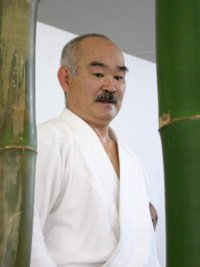

|

T.K. Chiba, Shihan. |
|||||
|
|||||
| Shihan | |||||
| T.K. Chiba, 8th Dan, Birankai Founder | |||||
| Jack Arnold, 7th Dan, In Memoriam | |||||
| Dennis Belt, 6th Dan, Ventura Aikikai | |||||
| Darrell Bluhm, 6th Dan, Siskiyou Aikikai | |||||
| Archie Champion, 6th Dan, Central Coast Aikikai | |||||
| Coryl Crane, 6th Dan, North County Aikikai | |||||
| Lorraine DiAnne, 6th Dan, Westside Aikido | |||||
| Aki Fleshler, 6th Dan, Multnomah Aikikai | |||||
| Nobuo Iseri, 6th Dan, In Memoriam | |||||
| Elizabeth Lynn, 6th Dan, Eastshore Aikikai | |||||
| George Lyons, 6th Dan, Bucks County Aikido | |||||
| Mark Murashige, 6th Dan, In Memoriam | |||||
| Gloria E. Nomura, 6th Dan, Aikido Institute of San Francisco | |||||
| Juba Nour, 6th Dan, At Large | |||||
| Terri Teshiba, 6th Dan, At Large | |||||
| Kristina Varjan, 6th Dan, , Kohala Aikikai | |||||
| Pablo Vázquez, 6th Dan, At Large | |||||
| Shidoin | |||||
| 6th Dan | |||||
| Frank Apodaca, Deep River Aikikai | |||||
| Elizabeth Beringer, San Diego Aikikai | |||||
| Maureen Browne, Fox Valley Aikikai | |||||
| Jobe Groot, Mountain Coast Aikikai | |||||
| Meido Moore, Shinjinkai | |||||
| Robert Savoca, Brooklyn Aikikai | |||||
| David Stier, Green River Aikido | |||||
| Philip Traunstein, Long Mountain Aikido | |||||
| Rikko Varjan, Kohala Aikikai | |||||
| Norman Wight, North County Aikikai | |||||
| 5th Dan | |||||
| Charles Aarons, Aikido Takayama | |||||
| Kathy Altieri, Aikido Daiwa | |||||
| Kevin Bash, Riverside Aikikai | |||||
| Patricia Belt, Ventura Aikikai | |||||
| Robert Burns, Aiki Farms Aikikai | |||||
| Leslie Cohen, San Diego Aikikai | |||||
| Jim Davis, Sonoran Aikikai | |||||
| Diane Deskin, Sonoran Aikikai | |||||
| Thierry Diagana, Aikido Institute of San Francisco | |||||
| Deena Drake, San Diego Aikikai | |||||
| Cindy Eggers, Siskiyou Aikikai | |||||
| K.T. Grimaldi, Copper Mountain Aikido | |||||
| Katherine (Roo) Heins, Northwest Michigan Aikikai | |||||
| Daniel Kempling, At Large | |||||
| Patti Meisenbach-Lyons, Bucks County Aikido | |||||
| Neilu Naini, Clallam Aikikai | |||||
| Rodger Park, Huron Valley Aikikai | |||||
| Alex Peterson, Joshua's Forge | |||||
| Cecilia Ramos, Grass Valley Aikikai | |||||
| Rich Roberts, At Large | |||||
| Michaela Roessner-Herman, At Large | |||||
| Manolo San Miguel, At Large | |||||
| J.D. Sandoval, Hayward Aikido | |||||
| Kathleen Stier, Green River Aikido | |||||
| Elmer Tancinco, Alameda Aikikai | |||||
| Steve Thoms, Eugene Aikikai | |||||
| Suzane Van Amburgh, Multnomah Aikikai | |||||
| Philip Vargas, Aikido of Albuquerque | |||||
| Mike Vaughn, Eastshore Aikikai | |||||
| 4th Dan | |||||
| David Alonzo, San Diego Aikikai | |||||
| Carl Baldini, Brooklyn Aikikai | |||||
| Teryne Dorret, Aikido Daiwa | |||||
| Jamie Fucito, Copper Mountain Aikido | |||||
| Steve Garber, San Diego Aikikai | |||||
| Maggie Kay, Goldstream Aikikai | |||||
| Liese Klein, Fire Horse Aikido | |||||
| Bill Marsh, Clallam Aikikai | |||||
| Miguel Moreno, At Large | |||||
| Marshall Pease, At Large | |||||
| Rob Schenk, Aikido Institute of San Francisco | |||||
| Sidney Schwartz, Multnomah Aikikai | |||||
| Sergey Tsygalnitsky, Fox Valley Aikikai | |||||
| Bernadette Vargas, Aikido of Albuquerque | |||||
| Fukushidoin | |||||
| 5th Dan | |||||
| Toma Rosenzweig, In Memoriam | |||||
| 4th Dan | |||||
| Joseph Canon, Corvallis Aikikai | |||||
| Richard Ciriello, Boca Aikido | |||||
| David Dewberry, Multnomah Aikikai | |||||
| Neal Dunnigan, Wheatbelt Aikido | |||||
| Erik Fredricksen, Huron Valley Aikikai | |||||
| John Gardner, Grand Rapids Aikikai | |||||
| Eric Karalius, Connecticut Aikikai | |||||
| Ea Murphy, At Large | |||||
| Dmitriy Panasenko, Hayward Aikido | |||||
| Daniel Pantaleo, Connecticut Aikikai | |||||
| Robert Scollard, Multnomah Aikikai | |||||
| Theresa Thadani, Aikido Institute of San Francisco | |||||
| 3rd Dan | |||||
| Garry Blaine, Still Waters Aikikai | |||||
| Jim Borders, Huron Valley Aikikai | |||||
| Dana Bush, Hayward Aikido | |||||
| William Champion, Ventura Aikikai | |||||
| Robert Dean, Moffett Aikido | |||||
| Ricardo Fernandez, Sonoran Aikikai | |||||
| Nicholas Fritz, Churn Creek Aikido | |||||
| Carole Gifford, Eastshore Aikikai | |||||
| Edward Hernandez, New Tampa Aikido | |||||
| Richard (Bud) Hindman, Boulder City Aikido | |||||
| Enmei (Joanna) Hunter, Shinjinkai | |||||
| Karen Kalliel, San Diego Aikikai | |||||
| Lester Lawson, Eastshore Aikikai | |||||
| Norine Longmire , Aikido Takayama | |||||
| David Mata, Grand Rapids Aikikai | |||||
| John McDevitt, Fearless Heart Aikido | |||||
| Jamie McMahon, San Diego Aikikai | |||||
| Tomoko Murakami, Eastshore Aikikai | |||||
| Hideki Okuda, Aikido Daiwa | |||||
| Terri Park, Huron Valley Aikikai | |||||
| Debbie Pastors, Oak Park Aikikai | |||||
| Kate Savoca, Brooklyn Aikikai | |||||
| Todd Shinto, In Memoriam | |||||
| Howard Sinnett, Boulder City Aikido | |||||
| Eric Soroker, Bucks County Aikido | |||||
| Lori Stewart, San Diego Aikikai | |||||
| Roger Wright, Ventura Aikikai | |||||
| Nafis Zahir, Bucks County Aikido | |||||
| 2nd Dan | |||||
| Cesar Aldea, Aikido Institute of San Francisco | |||||
| Jannie Chan, Hayward Aikido | |||||
| Jon DeGuzman, Fox Valley Aikikai | |||||
| Eric Doss, Lansing Area Aikikai | |||||
| Mark Drake, North County Aikikai | |||||
| Gerard Enriquez, Aikido Institute of San Francisco | |||||
| Isaiah Fernandez, Hayward Aikido | |||||
| Kevin Liu, North County Aikikai | |||||
| Steve Luis, Orange Coast Aikikai | |||||
| Melissa Miller, Hayward Aikido | |||||
| Sarah Rodriguez, San Diego Aikikai | |||||
| Mark Sharp, Oak Park Aikikai | |||||
| Marc St. Onge, Westside Aikido | |||||
| Christopher Wagner, Shinjinkai | |||||
Copyright© 1996-2014